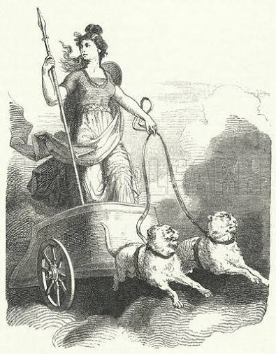

Freyja, deusa do amor, da magia e da guerra
Freyja era uma deusa da mitologia nórdica e pertencia ao grupo dos Vanir, divindades
ligadas à natureza e à fertilidade. Ela estava ligada ao amor, à beleza, à magia e também à
guerra. Apesar disso ela é associada à beleza, sua importância , vai além da aparência,
pois ela era considerada uma deusa poderosa e sábia.
Freyja recebe parte dos guerreiros mortos em combate em seu grande salão, Fólkvangr, a outra
parte
vai para o salão de Odin, Valhalla.